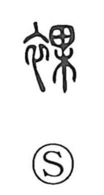

裸

Kun: hadaka, katanugu | On: ra
naked ・ bare ・ nudity
Explanation
Shirakawa explains 裸 as a phono-semantic character: the left element 衣 points to clothing and its removal, while the right element 果 serves as the phonetic, giving the sound ra. The graph 倮 (“person” + 果) already expressed human nakedness; by replacing the person with 衣, 裸 highlights the condition of the body after clothes have been taken off. Ancient glosses describe concrete actions such as “stripping to the waist” or “baring a shoulder,” capturing the sense of a body laid bare once garments are removed.